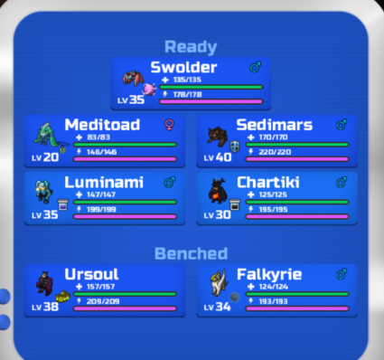

Details on the Oxifly core team!
Oxifly Core(Stall):
1)Oxidrake(V clever, Mys.Dust) R tank with bulk up + driving force
2)Terrafly(Brawny Nimble, Ess) Good ambush damage dealer along with poison barb utility + barbs remover
3)Ventacean(V robust, Heavy armour) Melee wall
4)Sedimars(V clever, Shield)Ranged wall and sharpen hasty damage dealer
5)Eleguana(Robust clever, Kabunga coffee) Ranged wall with good melee defense + only joltooth answer
6)Chartiki(Smart robust, energy orb)Traps remover with and a overall bulk support and chip damage dealer
7)Ursoul(Brawny robust SA, health amulet) Good melee wall with terrifying support + slap down utility and sharpen
Win rate: 80%(Based on 10 matches)
Overall: Very solid and stally team and extremely difficult to break this team however recomended to be extra careful against revenine and best if used in Tournaments as its a stall. This team is also corely related to each other and Oxidrake helds the team together so making too many predictions will result in a negative manner.
